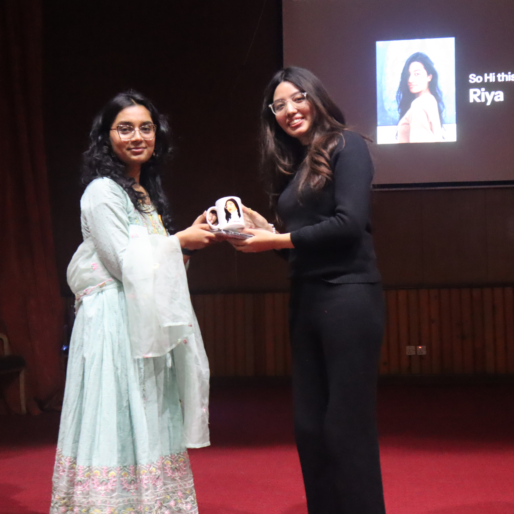
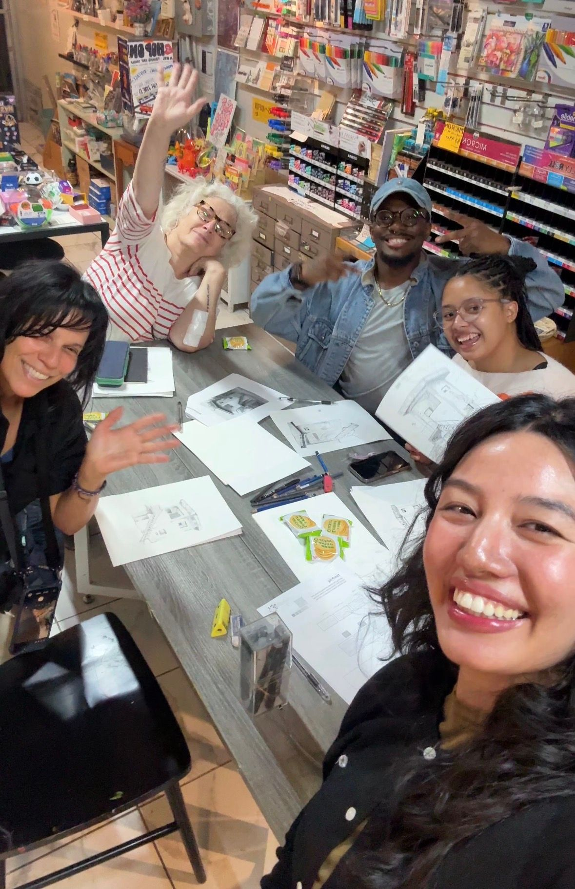
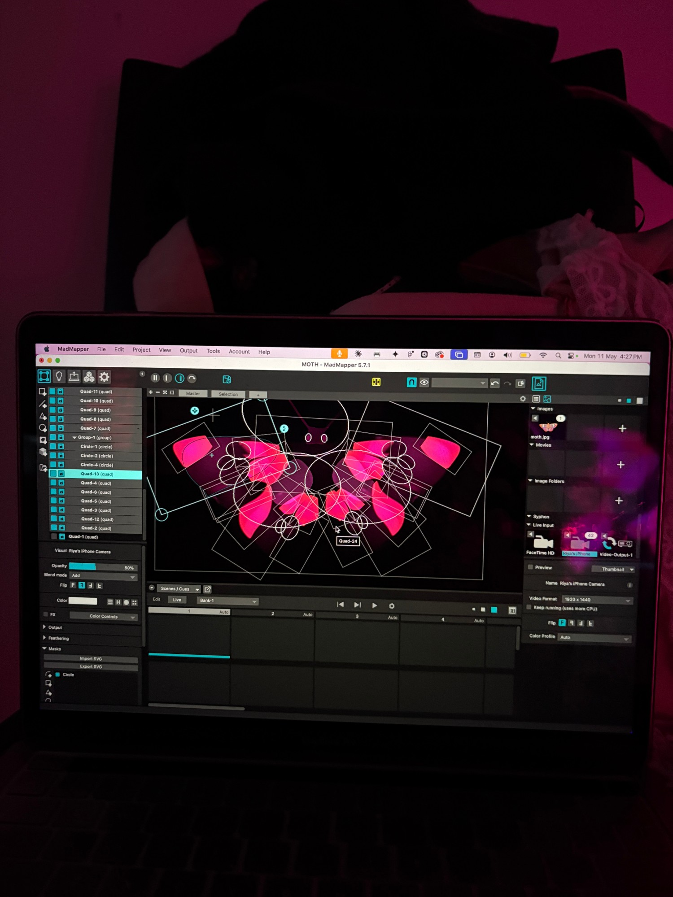
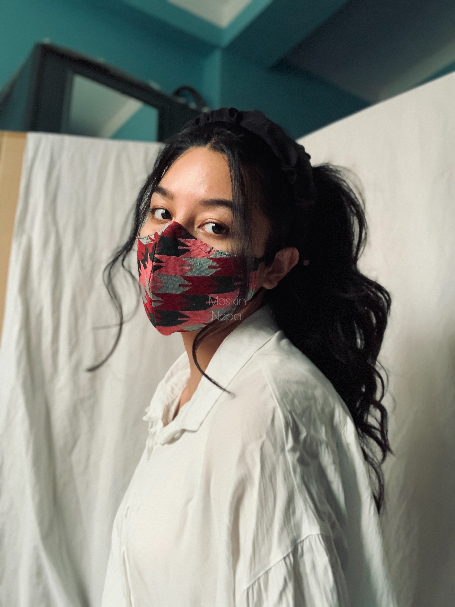

Hi I’m Riya
I’m a Product Designer with 5+ years of experience working on complex products ranging from learning platforms to AI-native and B2B tools.
Coming from a computer science background, I bring a balance of technical understanding, systems thinking, and user-centered design into my work.




I own a mask brand with my sister in Nepal
Timeline
2026–Present
Graduated from Parsons with a 3.94 GPA and started working as a UX Consultant at Kyxstart.
2025
Studied Masters in Communications Design at Parsons School of Design and also came to NY!
2024
Worked as a Sole Designer at Clevero and also taught as a UI/UX Instructor at Crest Technologies.
2020–2023
Started as a Freelance designer at Programiz and stayed there for 4 years while getting promoted to Senior Designer.
2017–2022
Graduated after 5 years of my Bachelors in Computer Science because of Covid.
I shot this on an Iphone X in my bedroom with cardboards, bedsheets and a vision as you can clearly tell.